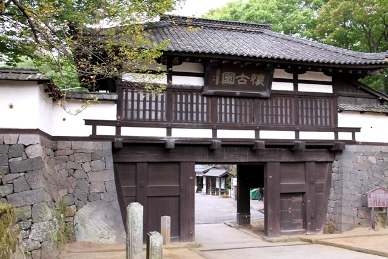
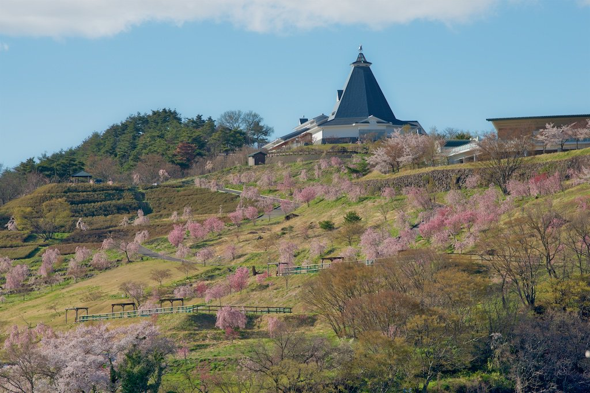
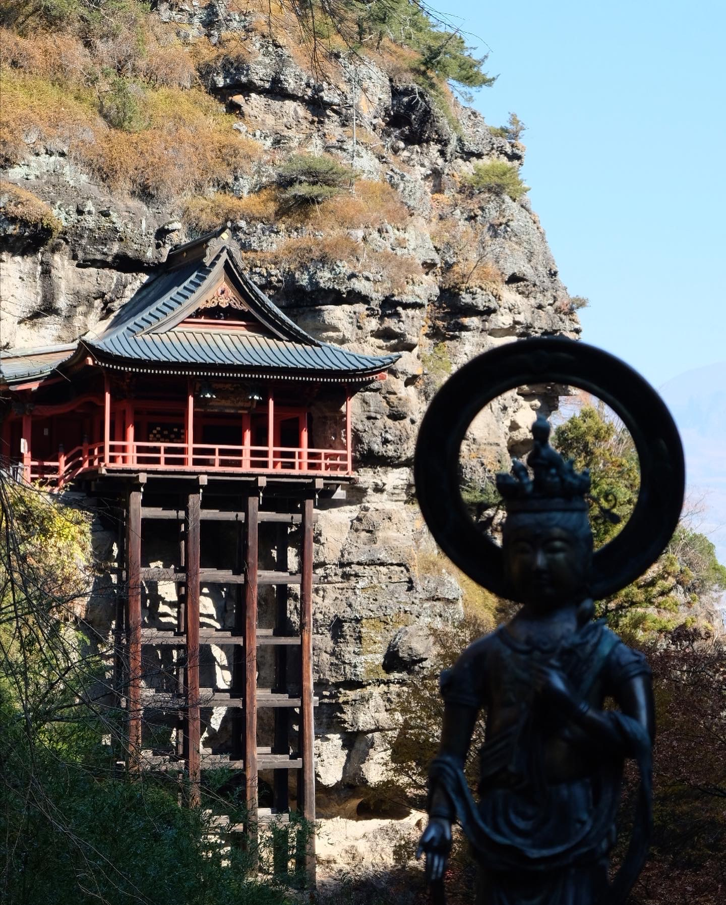
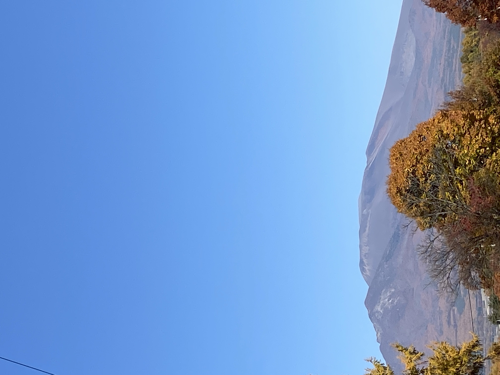
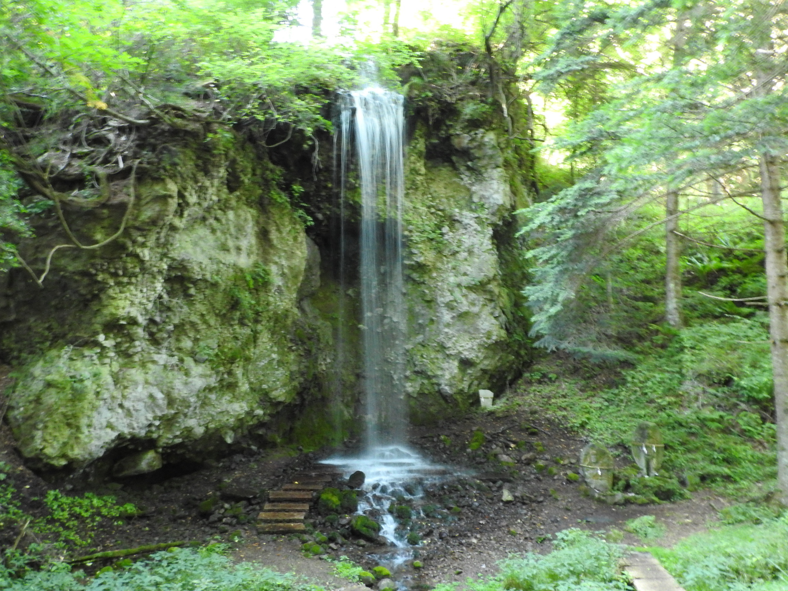

| 観光名所 | |||
| 懐古園 |  | 懐古園は、かつて名城と称えられた小諸城の跡地。 日本百名城のひとつに数えられた小諸城は鎌倉時代からの古城です。 武田信玄の時代に山本勘助や馬場信房らにより現在の縄張りとなり、豊臣秀吉が天下統一をした時代に、小諸城主となった仙石秀久により完成されました。 城下町より低い位置に築かれた「穴城」は全国でも珍しいものです。 | |
| 飯綱山公園 |  | 農業で人と人をつなぎ、ふれあいを生み出す 敷地となる飯綱山公園は、長野県小諸市に位置し、小諸高原美術館やドッグランなども併設している自然と眺望豊かな公園です。 浅間山、南アルプス、晴れた日には富士山まで見渡すことができる雄大な景色を楽しめます。 | |
| 布引観音 |  | 布引観音（ぬのびきかんのん）は天台宗布引山釈尊寺が正式な名称です。 信濃三十三観音霊場の第二十六番札所に定められています。 信濃三十三観音霊場は、江戸時代の初頭に定められたと伝えられ、いずれの寺々も善光寺への古き街道筋にあることから、善光寺信仰とも深いつながりを持つと考えられています。 | |
| 浅間山 |  | 浅間山（あさまやま）は、嬬恋村と長野県北佐久郡軽井沢町及び御代田町との境にある標高2,568mの世界でも有数な活火山として知られています。 数十万年前から火山活動が活発であり、それらの火山は浅間烏帽子火山群と呼ばれています。 | |
| 菱野温泉郷不動の滝 |  | 『不動の滝(ふどうのたき)/不動滝』は、小諸市の菱野(ひしの)温泉郷にある、落差15mほどの滝です。 浅間山の伏流水(ふくりゅうすい)が源流で、豊かな水が絶え間なく、岩肌からどんどん流れ落ちてくる姿は見事です。 厳寒期には「氷瀑(ひょうばく)」と呼ばれる、いわゆる凍った滝の姿を楽しめます。 | |